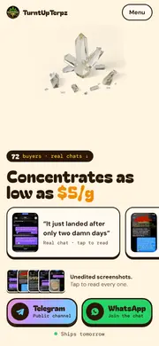

All drafts
57 drafts in 14 groups, newest first. Swipe each row sideways. None are linked from the live site or shown to search engines.

Live homepage: Night ShiftFrom Glow Graveyard, five ways (draft 1) · live since Oct 28 · iPhone-first, with the thumb-zone button barNight Shift, Halloween edition
Oct 28Five Halloween takes on the live Night Shift homepage: A24 horror, pastel goth, brutalist, bat pattern and candy corn. 5 drafts · Overview
Glow Graveyard, five ways
Oct 28Glow Graveyard redone with different fonts, less "AI look" and iPhone fixes (thumb-zone buttons, SE-sized first screen, 44pt taps). 5 drafts · Overview
Halloween homepages
Oct 28Five full Halloween restyles that keep every approved idea (proof first, $5/g, Telegram + WhatsApp, scam section). 5 drafts · Overview
Full styles
Oct 28Six full restyles of the homepage: colors, fonts, cartoon stickers and section designs. 6 drafts · Overview
Color schemes
Oct 28The live homepage in three research-backed color schemes. Only the colors change. 3 drafts · Overview
TikTok conversion layouts
Oct 27–28Six layouts for turning TikTok visitors into channel joins, each with its evidence. 6 drafts · Overview
Former homepage
Oct 14–28Drip, the scroll-motion homepage that was live before Proof + price. 1 draft
Getting out of TikTok's browser
Oct 23Four ways to tell TikTok visitors that Telegram won't open inside the app. 4 drafts · Overview
Top buttons
Oct 14The quick links moved up near the header, five ways. 5 drafts
Motion
Oct 14Dark, cinematic scroll animation: the page takes a dab. 1 draft
FaceTime
Oct 8FaceTime button idea styled like an incoming call. 1 draft
Redesign set
Oct 7Five early full redesigns. 5 drafts · Overview
Vouch layouts
Aug 29Five ways to lay out the vouch screenshots. 5 drafts
Earliest drafts
Aug 29The first five homepage ideas. 5 drafts
Previews captured Oct 28 on an iPhone-sized screen. Live site